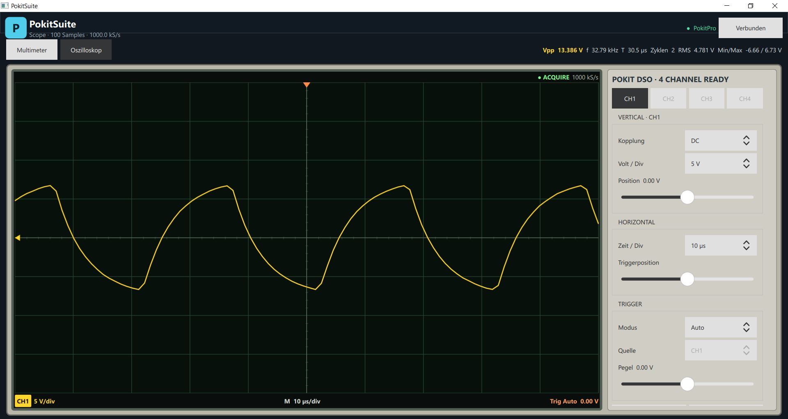
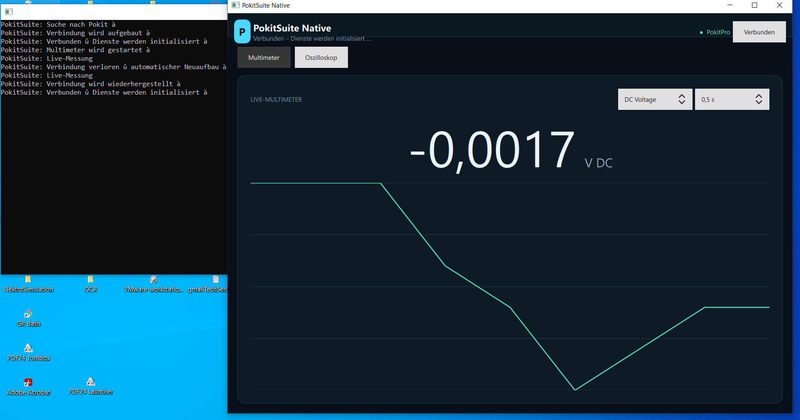

Live DMM
Automatic acquisition, 0.5/1 second intervals, selectable modes, and a time-value history recorder.
POKIT PRO · WINDOWS · OPEN SOURCE
A native digital multimeter and TDS 220-inspired oscilloscope with robust Bluetooth acquisition, live signal metrics, and a local MCP interface.
Developed with substantial assistance from OpenAI Codex; directed and hardware-tested by the project owner.

Real Pokit Pro capture · CH1MEASUREMENT WORKSPACE
Automatic acquisition, 0.5/1 second intervals, selectable modes, and a time-value history recorder.
Run/stop/single acquisition, true time/div behavior, V/div, coupling, trigger controls and mouse-wheel timebase.
Vpp, min/max, mean, RMS, frequency, period, cycles and duty cycle update with complete frames.
MODEL CONTEXT PROTOCOL
Seventeen local MCP tools give compatible AI clients structured access to device state, DMM values, scope frames and configuration—plus guarded Arduino sketch, compile, upload and serial workflows.
Read the MCP guide →get_scope_frame()
evaluate_scope_reference(
frequency_hz=1000,
vpp=3.3,
tolerance_percent=5
)
# diagnose → edit → compile
# → supervised upload → remeasure
REAL HARDWARE
The connection lifecycle, live DMM and CH1 DSO were iterated against a physical Pokit Pro on Windows. Screenshots on this page are genuine application captures.
HONEST PROJECT STATUS
BLE reconnect, DMM, DSO, timebase, metrics.
stdio handshake and all 17 tool schemas.
Board- and target-dependent, supervised operation.
UI-ready concept; multi-device acquisition remains open.